chuu
透過 Prototype 測試調整商品輪播、評價資訊與購物車提示，並將首頁與熱銷商品列表製作為具基本 Responsive 調整的靜態前端頁面。
背景與目標
chuu 官網同時呈現品牌活動、商品分類、推薦內容與購物資訊。本次自主 redesign 聚焦在商品瀏覽、商品詳情、評價與購物車，重新整理資訊層級、瀏覽節奏與操作提示。
本案為自主 redesign，品牌名稱、文字與圖片素材僅作非商業作品展示，並非 chuu 官方委託。
專案目標
- 讓商品分類、活動與價格資訊更容易辨識
- 讓使用者自行控制商品瀏覽節奏
- 補充評價中的尺寸與穿著參考資訊
- 在購物車提前顯示免運門檻與目前差額
- 建立能適應不同螢幕情境的版面結構
UI 設計範圍
介面設計涵蓋首頁、活動 Banner、商品列表、商品詳情與評價、購物車、穿搭推薦與客服中心，並呈現桌機、平板與手機情境。
前端切版範圍
實際程式製作包含首頁與熱銷商品列表，使用 HTML、CSS 與 JavaScript 實作商品網格、導覽、Banner 輪播與基本 Responsive 調整。其他頁面僅完成介面設計。
Responsive UI
設計稿涵蓋桌機、平板與手機情境，依螢幕寬度調整導覽、商品欄數、圖片比例、文字層級與操作區域，不將桌面版直接等比例縮小。
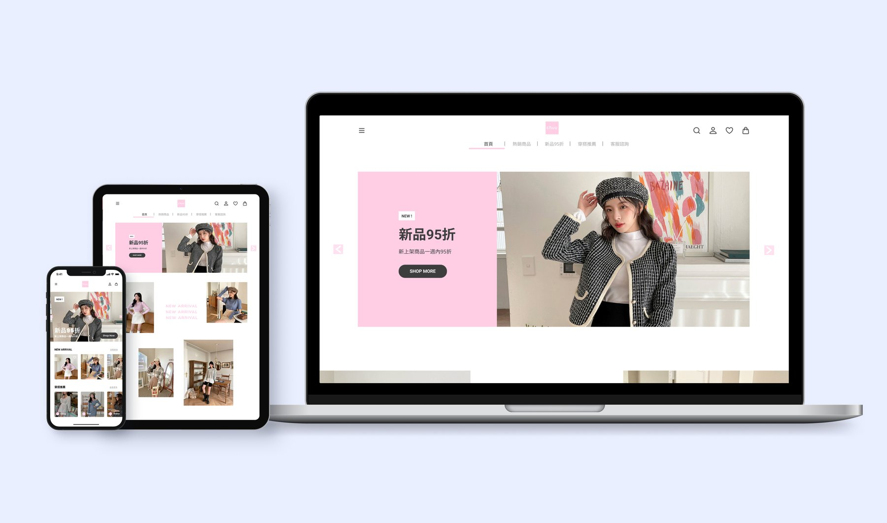
挑戰與洞察
我先觀察服飾電商的分類、活動與商品呈現方式，再透過 4 位使用者的簡短訪談與購物經驗聊天，整理評價、輪播、收藏與結帳資訊中的需求。完成 Prototype 後，我再從操作反應與口頭回饋調整設計。
競品與介面觀察
我比較服飾電商的商品分類、活動版位與資訊密度，作為頁面整理的參考。圖中的位置是當時的設計觀察，不是量化市場研究或客觀排名。其中 Uniqlo 的分類與活動標示、Zara 的極簡陳列，是當時參考的方向。
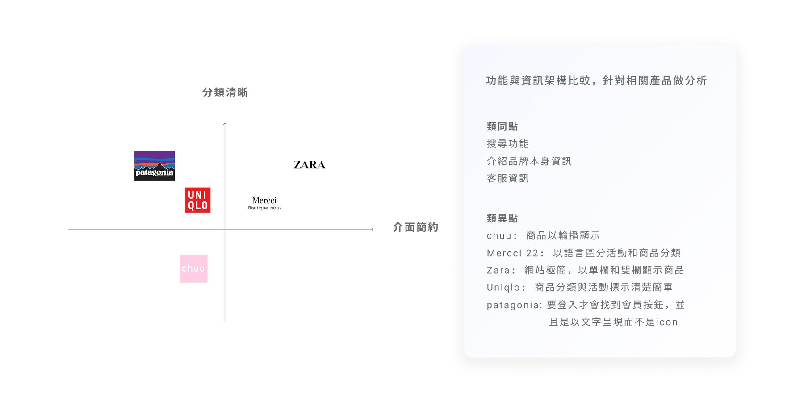
四位使用者的購物經驗整理
我透過簡短訪談與購物經驗聊天，整理 4 位使用者在服飾電商中的瀏覽習慣、評價需求、輪播看法與結帳困擾。這些資料用來建立初步設計方向，不代表完整使用者研究或正式分群。
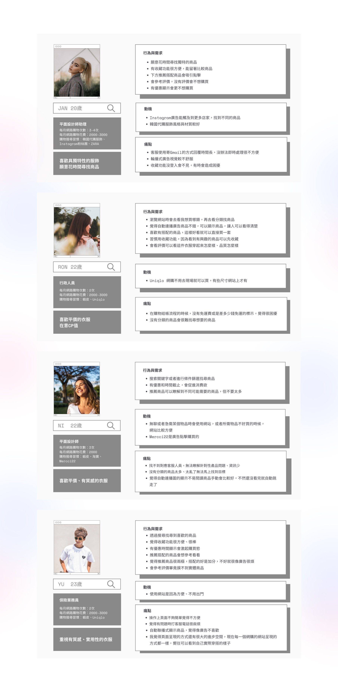
初步購物旅程整理
我根據有限的購物經驗回饋，整理從瀏覽首頁、尋找商品、查看詳情與評價，到加入購物車的主要問題。這是用來協助梳理設計範圍的初步旅程，不代表完整顧客旅程研究。
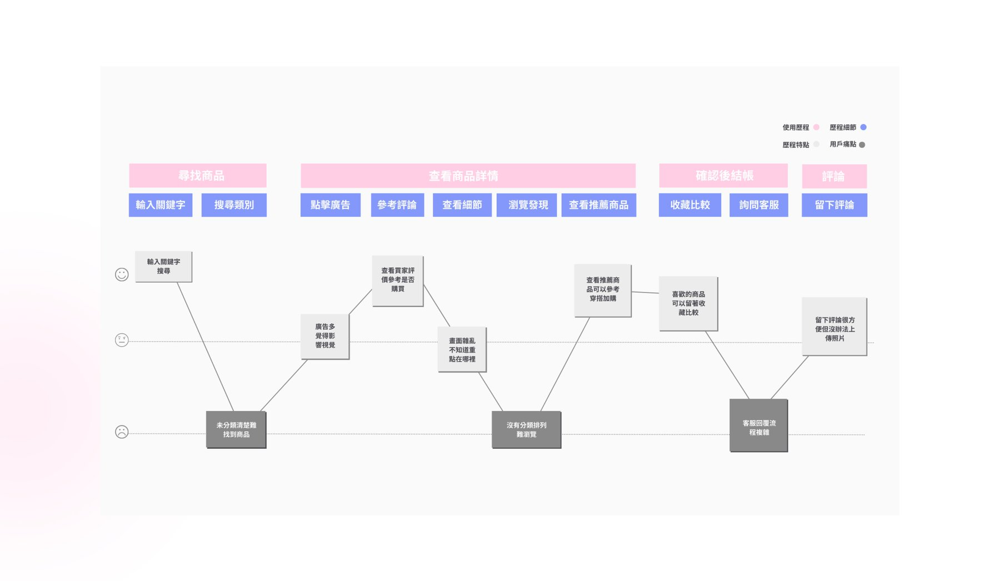
問題收斂
設計決策
我沒有直接照單全收所有回饋，而是區分前期意見、Prototype 操作反應與設計判斷，再決定哪些資訊應保留、前置或收斂。
現狀。活動與商品都以輪播呈現，瀏覽節奏被打斷
banner 保留輪播統一視覺，商品改為靜態網格自主瀏覽
四個決策
活動輪播與商品瀏覽分開處理
前期回饋 · 部分使用者認為商品自動切換會打斷閱讀，也有人認為輪播方便快速瀏覽；Prototype 回饋 · 活動 Banner 使用輪播較適合呈現多個活動。免運價差前置
前期回饋與流程檢視 · 免運條件若到結帳後才出現，使用者可能需要返回調整商品。增加評價參考資訊
前期與 Prototype 回饋 · 使用者希望評價能協助判斷尺寸與穿著效果。收斂推薦內容
Prototype 回饋與設計判斷 · 推薦內容過多時容易被理解為廣告，完整穿搭較能說明商品搭配關係。Prototype 測試與設計調整
我以可操作 Prototype 蒐集使用者的操作反應與口頭意見，並將內容整理為喜歡、可改善、疑問與新想法四類。由於當時沒有保留可確認的參與人數、任務腳本與完成率紀錄，本案不將這一輪描述為正式易用性測試，也不呈現量化成效。
綜合回饋後，我主要調整三個部分：活動 Banner 保留輪播、商品評價增加尺寸與穿著參考、推薦內容數量收斂。這些是整理回饋後形成的設計判斷，不代表測試已證明方案成效。
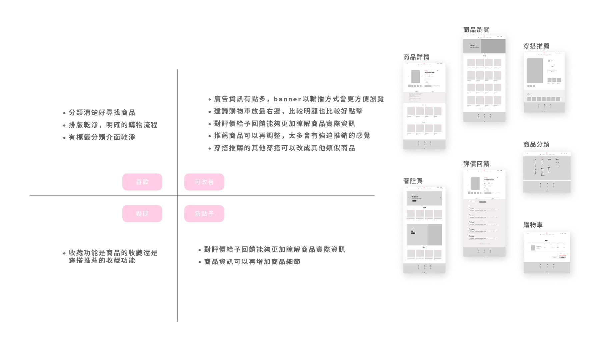
架構、流程與線框
根據網站內容盤點與前期回饋，我整理搜尋、商品瀏覽、購物車、會員與輔助功能，確認主要內容入口與頁面關係。
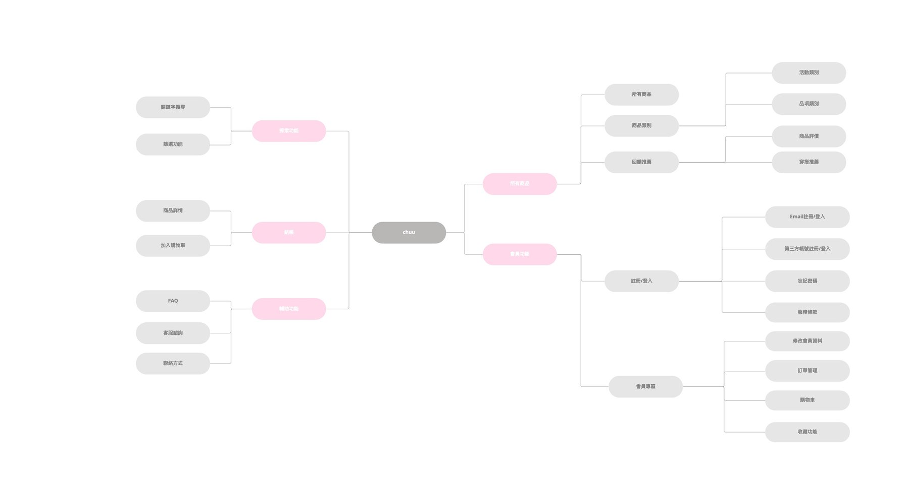
User Flow 整理設計階段規劃的登入註冊，以及從商品瀏覽、查看詳情到加入購物車的主要路徑。這些流程是介面設計範圍，未全部納入前端切版。
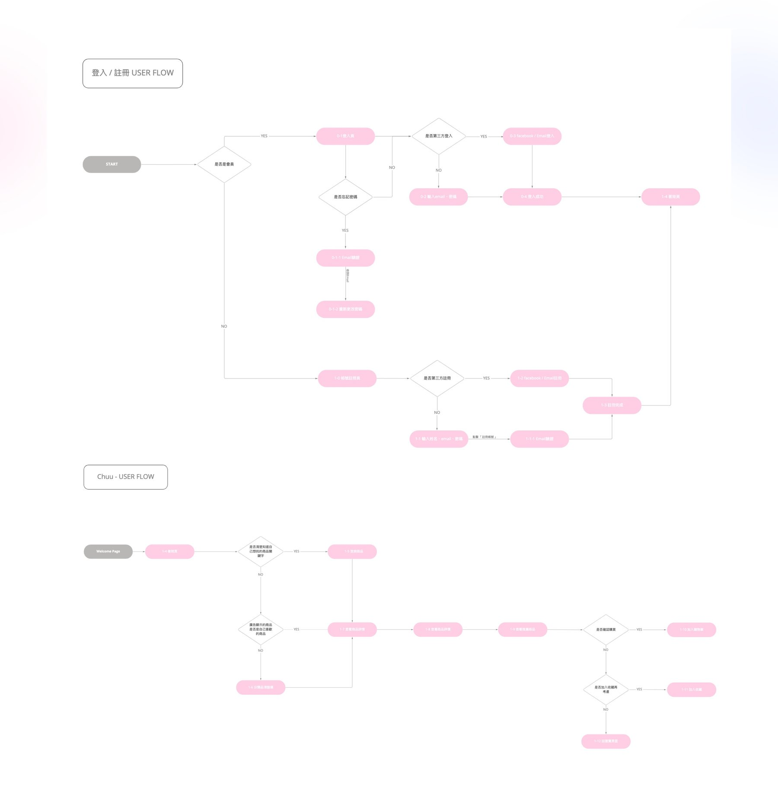
Wireframe 用來確認首頁、商品列表、商品詳情、評價與購物車的資訊順序，再進入 Responsive UI 設計。
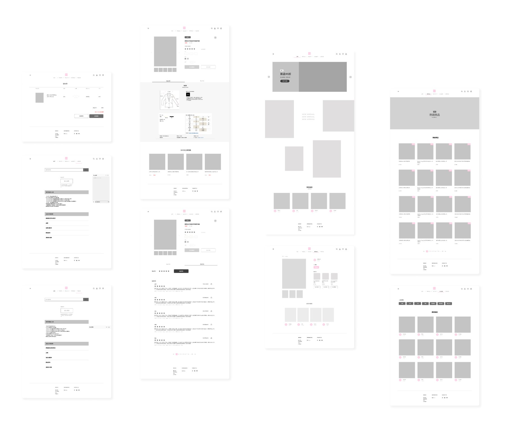
靜態前端切版
我將首頁與熱銷商品列表製作為靜態前端頁面，使用 HTML、CSS 與 JavaScript 實作商品網格、導覽、Banner 自動輪播與基本 Responsive 調整。
商品詳情、評價、購物車、會員、客服與付款僅完成介面設計，未實作資料、表單處理、登入狀態或後端流程。
介面設計
介面設計聚焦商品分類、價格、活動、評價與購物車資訊，並依不同螢幕情境調整版面。以下先呈現核心購物流程，再展示穿搭推薦與客服等延伸頁面。
介面規範
整理主要色彩、字級、按鈕、價格、標籤、商品卡片與表單樣式，維持不同頁面的視覺一致性。
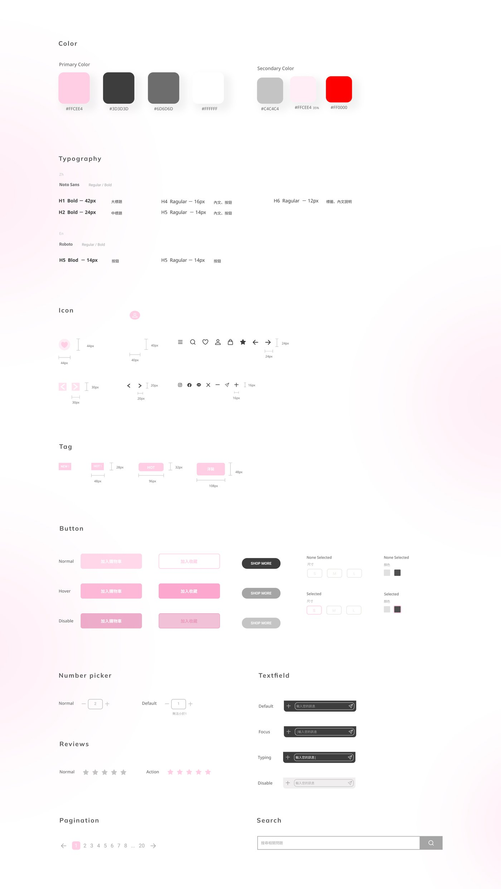
首頁與活動
活動 Banner 保留輪播；新品、熱銷與穿搭內容改為較穩定的排列，讓活動曝光與商品瀏覽使用不同節奏。
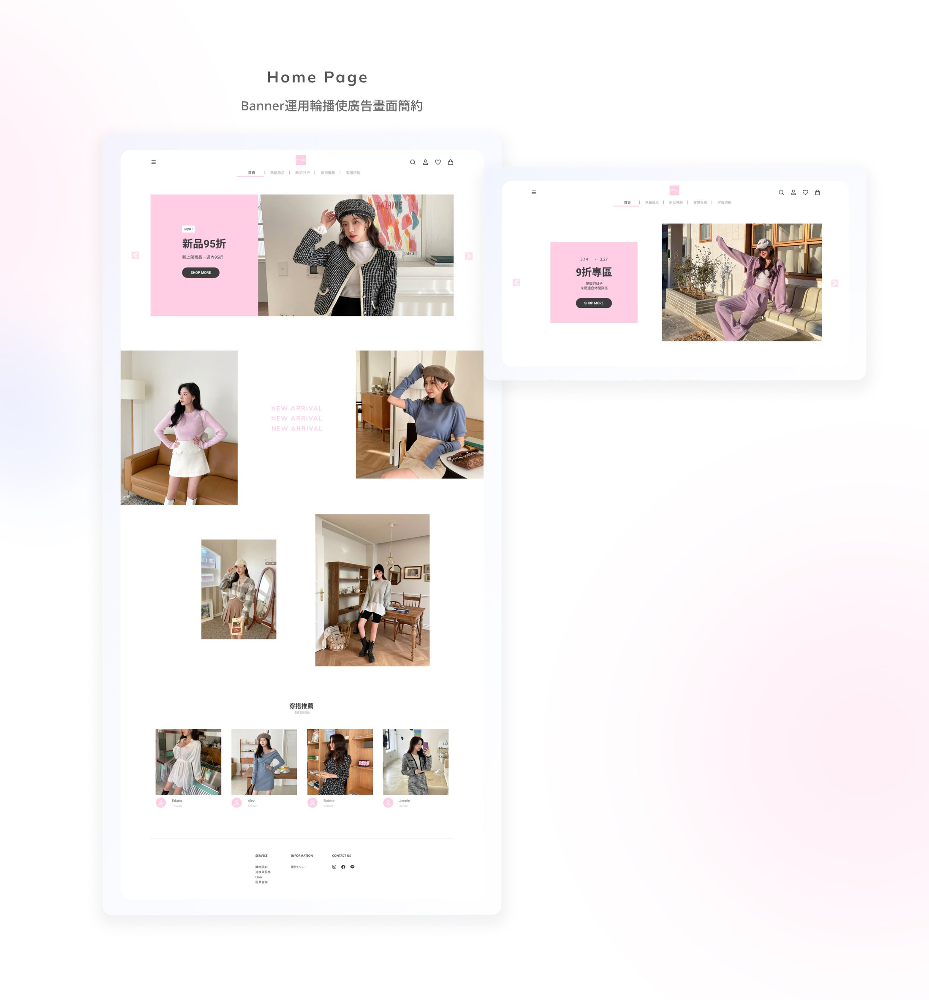
商品列表
以固定網格整理商品圖片、活動標籤、原價與優惠價，方便比較商品與價格。
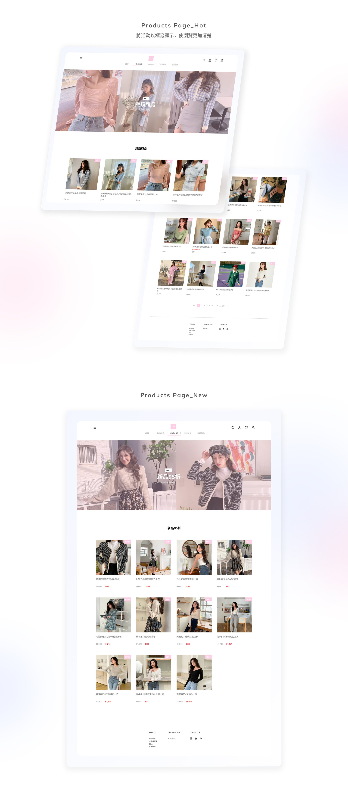
商品詳情與評價
評價加入購買者身形、圖片與「是否有幫助」回饋，補充尺寸與穿著效果的判斷資訊。
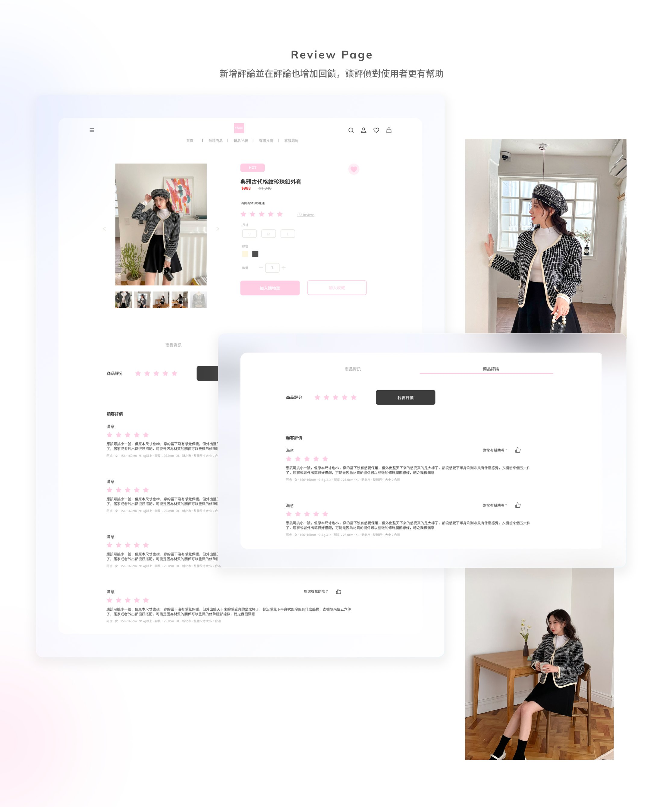
購物車
在合計金額附近顯示免運門檻與目前差額，讓運費條件在結帳前被看見。
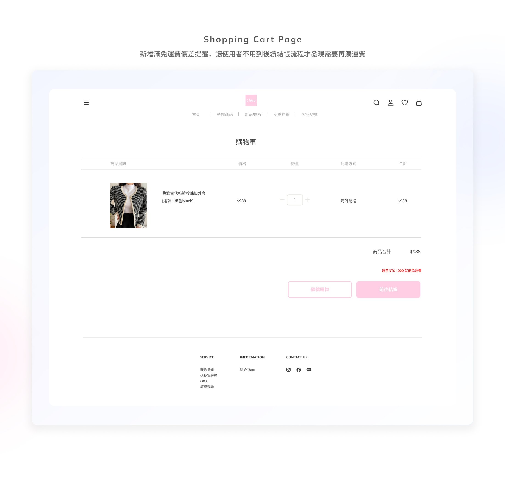
活動 Banner 版型
四款活動 Banner 共用同一套版式與色彩，瀏覽時的視覺節奏穩定。
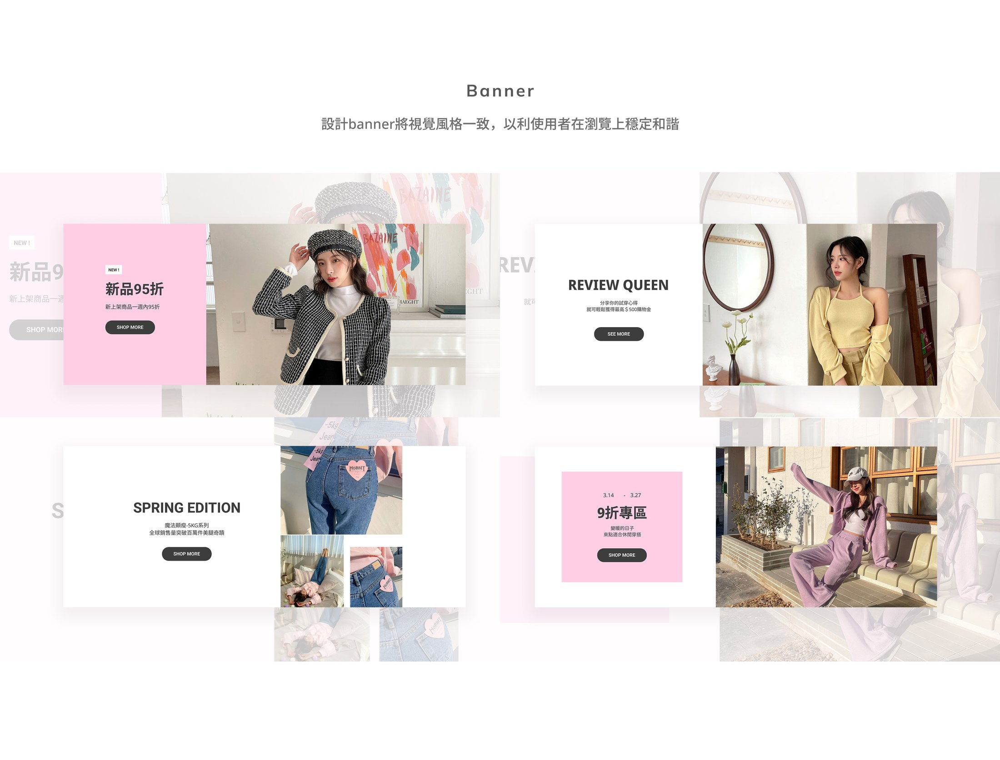
穿搭推薦
以完整穿搭呈現商品搭配，並提供查看其中單品的入口；這是商品瀏覽的延伸內容。
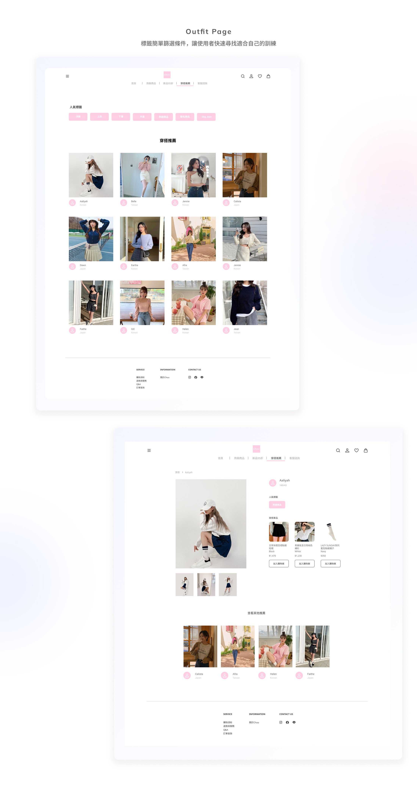
客服中心
將常見問題、公告與聯絡客服分開整理，作為購物流程外的輔助資訊。
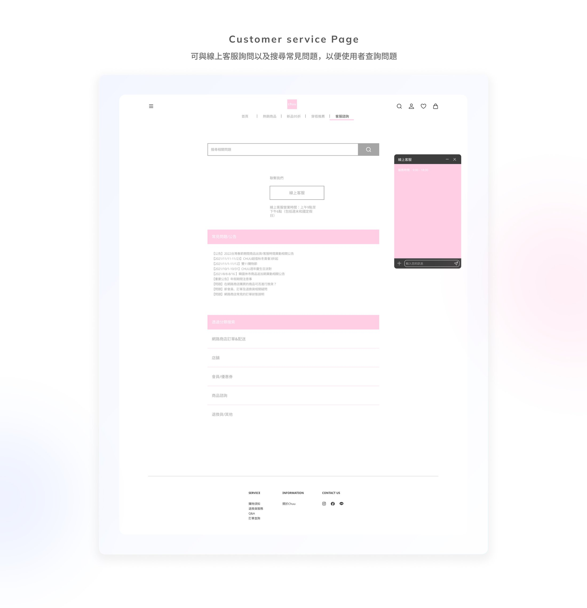
專案範圍
本案為自主 redesign。前期資料來自競品觀察、4 位使用者的簡短訪談與購物經驗聊天，以及一輪 Prototype 測試；因未保留可確認的 Prototype 測試人數、任務腳本與完成率紀錄，不將結果描述為正式易用性驗證。
介面設計涵蓋首頁、商品列表、商品詳情與評價、購物車、穿搭推薦與客服中心；實際前端切版則包含首頁與熱銷商品列表，未串接商品資料、會員、購物車、付款與客服等後端功能。